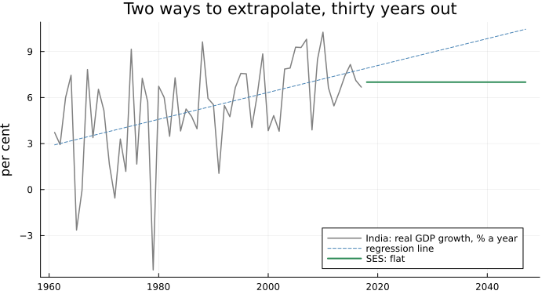
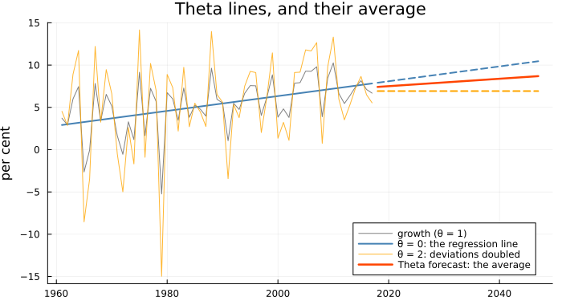
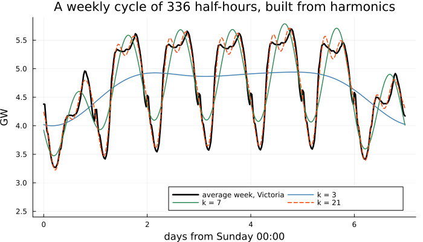
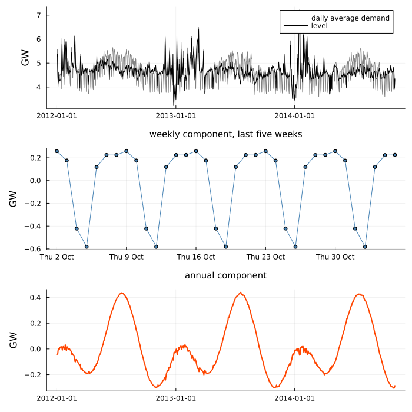
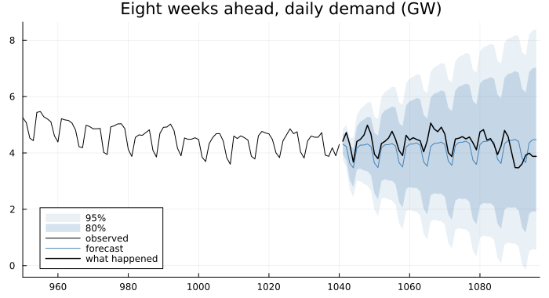
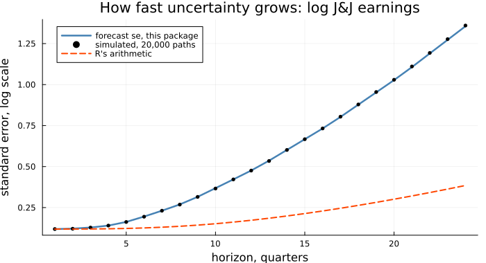

Theta, and Seasonality ETS Cannot Represent
In 2000 Spyros Makridakis and Michèle Hibon published the results of the M3 competition: three thousand-odd series from business, finance, demography and macroeconomics, forecast by every method anyone cared to enter. The method that did best overall was neither an elaborate ARIMA search nor a neural network, but a short procedure by Vassilis Assimakopoulos and Konstantinos Nikolopoulos, described in unfamiliar language — "theta lines", a series' "local curvature".
Take a series of the kind M3 was full of: India's real GDP growth, one number a year since 1961. What should anyone say about the next decade? The first half of this chapter answers with Theta, and finds under its description something the last two Parts have already built. The second half deals with seasonality that Chapters 24–26 have no way to hold.
The obvious attempt: flat, or the long-run line
using TSAnalytics, Plots, Statistics, Random, LinearAlgebra, Dates
g = dataset("global_economy")
ix = findall(==("India"), g.Country)
yr, gr = g.Year[ix][2:end], g.Growth[ix][2:end] # 1961-2017; 1960 has no growth rate
n, H = length(gr), 30
X = hcat(ones(n), 0:n-1)
a, b = X \ gr # the straight line through all of it
ses = fit_ets(gr) # ETS(A,N,N): simple exponential smoothing
fy = yr[end] .+ (1:H)
println("SES α = ", round(ses.alpha, digits = 4), ", final level ", round(ses.level[end], digits = 3))
println("regression slope b = ", round(b, digits = 4), " points a year")
println("forecast for 2018: SES ", round(forecast(ses, 1).point[1], digits = 3),
", regression line ", round(a + b * n, digits = 3), "; for 2047, the line says ",
round(a + b * (n + H - 1), digits = 2))SES α = 0.1058, final level 7.005
regression slope b = 0.0877 points a year
forecast for 2018: SES 7.005, regression line 7.912; for 2047, the line says 10.45plot(yr, gr; color = :gray, lw = 1.5, label = "India: real GDP growth, % a year", legend = :bottomright,
size = (700, 380), ylabel = "per cent", title = "Two ways to extrapolate, thirty years out")
plot!(vcat(yr, fy), a .+ b .* (0:n+H-1); color = :steelblue, linestyle = :dash, label = "regression line")
plot!(fy, forecast(ses, H).point; color = :seagreen, lw = 2, label = "SES: flat")
Simple exponential smoothing, Chapter 24's method, settles on α = 0.1058 — a long memory, for a noisy series — and forecasts 7.005 per cent for every year to come: nothing will change. The regression line says the opposite: growth has risen by 0.0877 of a point a year since 1961 and will go on rising, to 10.45 per cent by 2047. One ignores the trend; the other treats a slope fitted largely to the 1960s and 1970s as a law. Most forecasters want something in between, with no principled way to say where.
The idea: theta lines, and what they turn out to be
Assimakopoulos and Nikolopoulos started from the series' curvature. Write L_t for the regression line and define a family of theta lines
\[Z_t(\theta) = \theta\, y_t + (1-\theta)\, L_t .\]
θ = 1 is the data, θ = 0 the straight line, and θ = 2 doubles every deviation from the line. Since (Z(0) + Z(2))/2 = y, the method forecasts the two and averages: Z(0) is extended, keeping the long-run trend, and Z(2) is forecast by simple exponential smoothing, keeping the recent level.
L = a .+ b .* (0:n-1) # theta line, θ = 0
Z2 = 2 .* gr .- L # theta line, θ = 2: deviations from the line doubled
ℓ = 2 * ses.l0 - L[1] # SES on Z2, at SES's own α and a matching start
for t in 1:n
global ℓ += ses.alpha * (Z2[t] - ℓ)
end
lines_fc = [(a + b * (n - 1 + h) + ℓ) / 2 for h in 1:H] # average the two lines' forecasts
th = fit_theta(gr)
theta_fc = forecast(th, H).point
println("2018: average of the two lines ", round(lines_fc[1], digits = 6), ", fit_theta ", round(theta_fc[1], digits = 6))
println("largest difference over 30 years: ", round(maximum(abs.(lines_fc .- theta_fc)), sigdigits = 2))
println("fit_theta: α = ", round(th.alpha, digits = 4), ", drift b0/2 = ", round(th.b0 / 2, digits = 4))2018: average of the two lines 7.418596, fit_theta 7.418596
largest difference over 30 years: 1.8e-15
fit_theta: α = 0.1058, drift b0/2 = 0.0438plot(yr, gr; color = :gray, label = "growth (θ = 1)", legend = :bottomright, size = (700, 380),
ylabel = "per cent", title = "Theta lines, and their average")
plot!(yr, L; color = :steelblue, lw = 2, label = "θ = 0: the regression line")
plot!(yr, Z2; color = :orange, alpha = 0.8, label = "θ = 2: deviations doubled")
plot!(fy, a .+ b .* (n:n+H-1); color = :steelblue, lw = 2, linestyle = :dash, label = "")
plot!(fy, fill(ℓ, H); color = :orange, lw = 2, linestyle = :dash, label = "")
plot!(fy, theta_fc; color = :orangered, lw = 2.5, label = "Theta forecast: the average")
The two agree to 1.8e-15. Yet fit_theta never builds a theta line: it uses a result of Rob Hyndman and Baki Billah (2003). Simple exponential smoothing is linear in the data, so smoothing 2y − L gives twice the smoothed y minus the smoothed line, and smoothing a straight line lags it by an amount that depends only on α, b and n. Collect the terms and the procedure collapses to
\[\hat y_{n+h} = \ell_n + \tfrac{1}{2}\, b \left( h - 1 + \frac{1 - (1-\alpha)^n}{\alpha} \right),\]
with ℓ_n the final smoothed level of y itself. Theta is simple exponential smoothing plus half the regression slope as drift. The red line starts from the smoothed level and climbs at 0.0438 a year, half of 0.0877. And since simple exponential smoothing is the forecast function of an ARIMA(0,1,1), as Chapter 24 noted, Theta is that model's forecast with a drift — not estimated, but fixed at half the slope of a line through the whole sample.
Put that way its success is less mysterious. Half the slope is shrinkage: the trend is believed, but not entirely. On short, noisy series, which M3 was full of, a full trend extrapolation is the costliest mistake available, and a fixed half is crude and hard to beat.
Making it work: a seasonal series
Theta has no seasonal component. A seasonal series is divided by a classical multiplicative seasonal figure (Chapter 14), the method runs on what remains, and the forecasts are multiplied back — if a test agrees: the lag-m autocorrelation r_m over its Bartlett standard error must exceed 1.6449, the two-sided 10 per cent point. On the IIP:
iip = dataset("iip_india")
y = iip.value
ti = fit_theta(y, 12)
println("seasonality statistic ", round(ti.seasonal_statistic, digits = 4), " against ",
round(TSAnalytics._confidence_z(0.10), digits = 4), "; adjusted: ", ti.deseasonalized)
println("seasonal figure, April to March: ", round.(ti.figure, digits = 3))
println("α = ", round(ti.alpha, digits = 4), ", drift per month b0/2 = ", round(ti.b0 / 2, digits = 4))
train, test = y[1:end-24], y[end-23:end]
ft = forecast(fit_theta(train, 12), 24)
println("RMSE, last 24 months: Theta ", round(rmse(test, ft.point), digits = 2),
", ETS(A,A,A) ", round(rmse(test, forecast(fit_ets(train, 12; trend = :add, seasonal = :add), 24).point), digits = 2),
", seasonal naive ", round(rmse(test, seasonal_naive(train, 24, 12).point), digits = 2))seasonality statistic 2.5432 against 1.6449; adjusted: true
seasonal figure, April to March: [0.937, 0.992, 0.984, 0.99, 0.981, 0.983, 0.995, 0.98, 1.038, 1.043, 0.999, 1.078]
α = 0.9322, drift per month b0/2 = 0.1587
RMSE, last 24 months: Theta 7.06, ETS(A,A,A) 4.45, seasonal naive 10.12The test passes easily, at 2.5432, and the figure is the familiar one: April at 0.937 of the trend, March at 1.078. After adjustment the series is close to a random walk, α = 0.9322, with a drift of 0.1587 a month. Held back two years, Theta's error is 7.06: much better than repeating last year, 10.12, and clearly worse than the seasonal ETS of Chapter 25, 4.45, whose seasonal states go on learning while Theta's figure is fixed once. One split proves little, as Chapter 23 insisted, but the ranking is the expected one.
The complication: what the test detects, and a drift that never stops
The seasonality test asks whether r_m is large. Any series with strong autocorrelation at lag m passes, seasonal or not — and a trending series has strong autocorrelation at every lag. India's GDP is annual. Pretend otherwise:
for m in (2, 4, 5)
t = fit_theta(log.(g.GDP[ix]), m)
println("annual log GDP declared with period ", m, ": statistic ", round(t.seasonal_statistic, digits = 2),
", adjusted: ", t.deseasonalized)
end
lg = log.(g.GDP[ix])
q = fit_theta(lg, 4)
println("the 'quarterly' figure it divides annual GDP by: ", round.(q.figure, digits = 5))
println("effect on the next four years' forecasts, per cent: ",
round.(100 .* (forecast(q, 4).point .- forecast(fit_theta(lg, 4; deseasonalize = false), 4).point), digits = 2))
println("Theta's growth forecast for 2027 and 2047: ", round.(theta_fc[[10, 30]], digits = 2))annual log GDP declared with period 2: statistic 4.06, adjusted: true
annual log GDP declared with period 4: statistic 2.48, adjusted: true
annual log GDP declared with period 5: statistic 2.1, adjusted: true
the 'quarterly' figure it divides annual GDP by: [0.99998, 1.0, 0.99984, 1.00018]
effect on the next four years' forecasts, per cent: [-0.46, 0.49, -0.08, -0.0]
Theta's growth forecast for 2027 and 2047: [7.81, 8.69]Every period passes, at 4.06, 2.48 and 2.1. The damage is small here — a trend this smooth leaves the decomposition little to misattribute, and the "quarterly" figure stays within two parts in ten thousand of one — but the forecasts now carry a sawtooth of up to half a per cent of GDP, imposed by quarters that do not exist. The manual shows the same false alarm on the Nile. R's thetaf and statsmodels gate on versions of this statistic, so the behaviour is inherited; when you know a series' calendar, pass deseasonalize = false.
The second limitation is structural. The drift is half a slope, applied for ever: Theta puts India's growth at 7.81 per cent in 2027 and 8.69 in 2047, still rising, as the second figure showed. There is no damping parameter. Chapter 25's damped trend exists for exactly this, and over a long horizon a damped ETS is the better tool.
On a seasonal series R's forecast::thetaf (9.0.2) returns fitted on the original scale but residuals from the underlying smoothing, on the deseasonalised scale, so its y - fitted and its residuals are different vectors. On the IIP, run in R, their sums of squares are 6919.2 and 7236.743; an RMSE computed from R's residuals describes a series nobody forecast. fit_theta reports both, under distinct names, matching R to every digit R prints:
println("sse ", round(ti.sse, digits = 2), " (y - fitted)\nsse_adjusted ", round(ti.sse_adjusted, digits = 2),
" (the smoothing's own, deseasonalised)")sse 6919.19 (y - fitted)
sse_adjusted 7236.74 (the smoothing's own, deseasonalised)resid is always y - fitted. Nothing is wrong here; R's two fields simply describe different things.
Seasonality that has no room in ETS
Chapter 16 decomposed Victoria's half-hourly electricity demand, with its three cycles: 48 half-hours in a day, 336 in a week, a year of roughly 17,500. Forecasting it with this Part's models runs into a wall. An ETS seasonal component keeps one state per season — twelve for monthly data, which is fine — so a weekly cycle in half-hourly data needs 336 states, each revised once a week. An annual cycle in daily data has period 365.25, which is not a number of states at all. And two cycles at once have no representation in ETS whatsoever.
The idea: seasonality as rotation
Alysha De Livera, Rob Hyndman and Ralph Snyder (2011) replaced the seasonal states with trigonometric pairs. For period m and harmonic j, write λ_j = 2πj/m and keep two states that rotate by that angle each step:
\[\begin{aligned} s_{j,t} &= \;\;\, s_{j,t-1}\cos\lambda_j + s^*_{j,t-1}\sin\lambda_j + \gamma_1 d_t \\ s^*_{j,t} &= -s_{j,t-1}\sin\lambda_j + s^*_{j,t-1}\cos\lambda_j + \gamma_2 d_t \end{aligned}\]
with d_t the one-step error and Σ_j s_{j,t} the seasonal effect. Left alone the pair traces a circle: s_j is a sine wave of period m/j whose amplitude and phase the errors nudge. A period is now an angle, so 365.25 is as easy as 12, and k harmonics cost 2k states however long the period. How many does a cycle need?
d = dataset("vic_elec")
hh = d.Demand ./ 1000 # GW, half-hourly
println(length(hh), " half-hours, ", d.Date[1], " to ", d.Date[end])
wk = [mean(hh[i:336:end-335]) for i in 1:336] # the average week, starting Sunday 00:00
tw = 0:335
fourier(k) = hcat(ones(336), reshape([f(2π * j * t / 336) for t in tw, j in 1:k, f in (cos, sin)], 336, :))
approx(k) = fourier(k) * (fourier(k) \ wk)
for k in (1, 3, 6, 7, 14, 21)
println("k = ", lpad(k, 2), " harmonics (", lpad(2k, 2), " states): RMS error ",
round(sqrt(mean((wk .- approx(k)) .^ 2)), digits = 3), " GW")
end52608 half-hours, 2012-01-01 to 2014-12-31
k = 1 harmonics ( 2 states): RMS error 0.646 GW
k = 3 harmonics ( 6 states): RMS error 0.624 GW
k = 6 harmonics (12 states): RMS error 0.607 GW
k = 7 harmonics (14 states): RMS error 0.299 GW
k = 14 harmonics (28 states): RMS error 0.155 GW
k = 21 harmonics (42 states): RMS error 0.103 GWplot(tw ./ 48, wk; color = :black, lw = 2.5, label = "average week, Victoria", size = (700, 400),
xlabel = "days from Sunday 00:00", ylabel = "GW", legend = :bottomright, legendcolumns = 2, ylims = (2.4, 5.9),
title = "A weekly cycle of 336 half-hours, built from harmonics")
plot!(tw ./ 48, approx(3); color = :steelblue, lw = 1.5, label = "k = 3")
plot!(tw ./ 48, approx(7); color = :seagreen, lw = 1.5, label = "k = 7")
plot!(tw ./ 48, approx(21); color = :orangered, lw = 1.5, linestyle = :dash, label = "k = 21")
Three harmonics give the shape of the week — low Sunday, a plateau to Friday, a lower Saturday — but barely improve on one, 0.624 GW of error against 0.646, because most of the variation is the daily cycle. At k = 7 the error halves to 0.299: the seventh harmonic of a week is the day. Twenty-one harmonics, 42 states, reach 0.103 GW. The lesson of the jump is to give the day its own period, which TBATS allows: periods = [48, 336], each with its own harmonics.
The name lists the parts: Trigonometric seasonality, Box-Cox transformation, ARMA errors, Trend, Seasonal. The Box-Cox is Chapter 7's — lambda = :auto chooses one by guerrero_lambda, and the back-transformed forecast is a median — and the trend is Chapter 25's, damped or not.
Making it work: Victoria, one day at a time
One limitation of this package first, stated plainly. On the half-hourly series fit_tbats currently finds no starting point inside the region where the model can forecast — described below — and refuses rather than report a fit from its starting values. R's forecast::tbats, given the same four weeks, fits in a little over a minute and chooses 23 harmonics for the day and 5 for the week: 56 seasonal states where one per season would need 384. Here the series is taken a day at a time, which brings in the other two problems: a weekly cycle and an annual one of 365.25 days.
try
fit_tbats(hh[1:4*336], [48, 336]; k = [3, 2])
catch e
println(first(sprint(showerror, e), 112), "...")
end
days = Date.(unique(d.Date))
daily = [mean(hh[d.Date .== string(x)]) for x in days] # average demand each day, GW
println(length(daily), " days, ", days[1], " to ", days[end])
fit_n = length(daily) - 56 # hold back the last eight weeks
tb = fit_tbats(daily[1:fit_n], [7, 365.25]; k = [3, 2])
println(tb)
println("seasonal states: ", 2 * sum(tb.k), "; converged: ", tb.converged)ArgumentError: fit_tbats: no forecastable starting point found for periods [48.0, 336.0] with k = [3, 2]. Every ...
1096 days, 2012-01-01 to 2014-12-31
TBATS(-, {7,365}, {3,2}, 0,0) n=1040
alpha = 0.97428 beta = 1.0e-5
gamma1 = [0.00037101, -0.01090583] gamma2 = [-0.00050201, 0.00141558]
SSE = 80.1258 sigma2 = 0.07704 AIC = 323.4796
seasonal states: 10; converged: truesd = state_decomposition(tb)
dt = days[1:fit_n]
p1 = plot(dt, sd.observed; color = :gray, label = "daily average demand", ylabel = "GW")
plot!(p1, dt, sd.level; color = :black, lw = 1, label = "level")
w5 = fit_n-34:fit_n
p2 = plot(dt[w5], sd.seasonal[1][w5]; color = :steelblue, marker = :circle, ms = 3, legend = false,
ylabel = "GW", title = "weekly component, last five weeks", xticks = (dt[w5][1:7:end], Dates.format.(dt[w5][1:7:end], "e d u")))
p3 = plot(dt, sd.seasonal[2]; color = :orangered, lw = 2, legend = false, ylabel = "GW",
title = "annual component")
plot(p1, p2, p3; layout = (3, 1), size = (700, 700), titlefontsize = 10, left_margin = 3Plots.mm)
Ten seasonal states hold both cycles. The level follows almost every day, α = 0.974: what moves demand from one day to the next is mostly weather, which this model cannot anticipate. The weekly component is five working days and a weekend well below them. The annual component is Victoria's climate: highest in the southern winter, when the state heats its houses, lowest in spring, with a smaller summer rise for air-conditioning.
fd = forecast(tb, 56)
println("RMSE over the last 8 weeks: TBATS ", round(rmse(daily[fit_n+1:end], fd.point), digits = 4),
", seasonal naive (same day last week) ",
round(rmse(daily[fit_n+1:end], seasonal_naive(daily[1:fit_n], 56, 7).point), digits = 4))
println("standard error at 1 day and 8 weeks: ", round.(fd.se[[1, 56]], digits = 3), " GW")
wkly = sd.seasonal[1][end-6:end]
println("weekly component, last seven days: ",
join(["$(Dates.format(x, "e")) $(round(v, digits = 2))" for (x, v) in zip(dt[end-6:end], wkly)], ", "))
ann = sd.seasonal[2]
i13 = findall(x -> year(x) == 2013, dt)
jm = findall(x -> year(x) == 2013 && month(x) <= 3, dt)
println("annual component in 2013: highest ", dt[i13][argmax(ann[i13])], ", lowest ", dt[i13][argmin(ann[i13])],
"; summer high ", dt[jm][argmax(ann[jm])])RMSE over the last 8 weeks: TBATS 0.4283, seasonal naive (same day last week) 0.436
standard error at 1 day and 8 weeks: [0.278, 1.998] GW
weekly component, last seven days: Thu 0.26, Fri 0.18, Sat -0.42, Sun -0.58, Mon 0.12, Tue 0.22, Wed 0.23
annual component in 2013: highest 2013-07-19, lowest 2013-10-29; summer high 2013-01-29plot(fd; history = daily[1:fit_n], xlims = (fit_n - 90, length(daily) + 1), size = (700, 380),
title = "Eight weeks ahead, daily demand (GW)", legend = :bottomleft)
plot!(fit_n+1:length(daily), daily[fit_n+1:end]; color = :black, lw = 1.5, label = "what happened")
The weekly effect is -0.42 GW on Saturday and -0.58 on Sunday, against 0.12 to 0.26 on working days; in 2013 the annual component peaked on 19 July, bottomed on 29 October and had its summer high on 29 January. The forecast beats the seasonal naive one, but only just, 0.4283 against 0.436. The fan is the honest part: with α near one the level is nearly a random walk, so the standard error grows from 0.278 GW tomorrow to 1.998 in eight weeks. The model knows the shape of a week far better than the level it will sit at — a fair summary of demand without a temperature forecast, which is the kind of regressor Part VIII brings in.
How many harmonics can a period carry? floor(m/2) span any pattern of integer period m, but for an even m the last, j = m/2, rotates by π: its pair stops mixing, and s* becomes a state the data cannot inform, so the identifiable maximum there is m/2 − 1. Within that ceiling, AIC chooses. On the IIP, with a Box-Cox check on J&J:
println("largest usable k: ", join(["m = $m → $(TSAnalytics._tbats_kmax(m))" for m in (4, 12, 48, 336, 7, 365.25)], ", "))
for k in 1:4
m = fit_tbats(y, 12; k = k)
println("IIP, k = ", k, ": SSE ", round(m.sse, digits = 1), ", AIC ", round(m.aic, digits = 2))
end
try fit_tbats(y, 12; k = 5) catch e; println(first(sprint(showerror, e), 103), "...") end
println("Box-Cox for J&J earnings: λ = ", round(fit_tbats(dataset("jj").value, 4; k = 1, lambda = :auto).lambda, digits = 3))largest usable k: m = 4 → 1, m = 12 → 5, m = 48 → 23, m = 336 → 167, m = 7 → 3, m = 365.25 → 182
IIP, k = 1: SSE 11123.1, AIC 1271.11
IIP, k = 2: SSE 10715.2, AIC 1268.38
IIP, k = 3: SSE 10666.2, AIC 1271.56
IIP, k = 4: SSE 9674.5, AIC 1257.99
ArgumentError: fit_tbats: no forecastable starting point found for periods [12.0] with k = [5]. Every c...
Box-Cox for J&J earnings: λ = 0.154The ceiling for daily data's week is 3, and for a 48-period day 23 — the number R chose for Victoria's half-hours. On the IIP four harmonics win on AIC, 1257.99; the fifth, the monthly ceiling, is refused, every starting point lying outside the forecastable region — the method's way of saying the fifth wave is noise. For J&J's earnings, whose seasonal swings grow with the level, Guerrero's method chooses λ = 0.154, close to Chapter 7's logarithm.
TBATS is linear in its states: x_t = F x_{t−1} + g d_t and y_t = w′x_{t−1} + d_t. Substituting the error gives x_t = (F − g w′) x_{t−1} + g y_t, so the past is forgotten — the model is forecastable — only if every eigenvalue of D = F − g w′ lies inside the unit circle. That is the real parameter region, not a box on the individual parameters; for a quarterly model it is one-sided in γ₂. fit_tbats enforces it with a margin of 1e-5:
F, gv, w = TSAnalytics._tbats_matrices(tb.alpha, tb.beta, 1.0, tb.gamma1, tb.gamma2, tb.periods, tb.k, true)
println("spectral radius of F - g w': ", maximum(abs, eigvals(F - gv * w')), "; margin ", TSAnalytics.TBATS_STABILITY_MARGIN)spectral radius of F - g w': 0.9999899999936687; margin 1.0e-5The daily fit sits exactly on that margin. That is usual: a seasonal near the boundary is nearly a random walk, which always fits a sample better, so an unconstrained optimiser rides the boundary.
The complication: how wide the intervals should be
The h-step forecast variance of a model of this kind is σ²(1 + Σ c_j²), summed over j = 1, …, h−1, with c_j = w′F^(j−1)g the effect of a shock j steps back; every state the shock moves — level, slope, each seasonal pair — contributes. Simulation checks it without algebra: run the model's own recursion many times with random errors and measure the spread. Quarterly J&J earnings, on logs:
lj = log.(dataset("jj").value)
m4 = fit_tbats(lj, 4; k = 1)
h = 24
fj = forecast(m4, h)
function sim_se(m, h, npaths, rng) # simulate the model's own recursion from a zero state
λ, σ = 2π / m.periods[1], sqrt(m.sigma2)
Y = zeros(npaths, h)
for p in 1:npaths
l = bb = s = s2 = 0.0
for t in 1:h
e = σ * randn(rng)
Y[p, t] = l + bb + s + e
l, bb = l + bb + m.alpha * e, bb + m.beta * e
s, s2 = cos(λ) * s + sin(λ) * s2 + m.gamma1[1] * e, -sin(λ) * s + cos(λ) * s2 + m.gamma2[1] * e
end
end
vec(std(Y; dims = 1))
end
N = 20_000
sim = sim_se(m4, h, N, MersenneTwister(27))
# R's arithmetic: the slope's shock weight dropped, the seasonal weights moved up one slot
gR = [m4.alpha, m4.gamma1[1], m4.gamma2[1], 0.0]
Fj, _, wj = TSAnalytics._tbats_matrices(m4.alpha, m4.beta, 1.0, m4.gamma1, m4.gamma2, m4.periods, m4.k, true)
cR = [dot(wj, Fj^(j - 1) * gR) for j in 1:h-1]
seR = sqrt.(m4.sigma2 .* (1 .+ cumsum(vcat(0.0, cR .^ 2))))
println("α = ", round(m4.alpha, sigdigits = 3), ", β = ", round(m4.beta, digits = 4))
for j in (1, 8, 24)
println("h = ", lpad(j, 2), ": forecast se ", round(fj.se[j], digits = 4), " simulated ",
round(sim[j], digits = 4), " R's arithmetic ", round(seR[j], digits = 4))
end
println("Monte Carlo relative error of a simulated se: about ", round(100 / sqrt(2N), digits = 2), "%")α = 2.22e-5, β = 0.1728
h = 1: forecast se 0.119 simulated 0.1191 R's arithmetic 0.119
h = 8: forecast se 0.2693 simulated 0.2683 R's arithmetic 0.136
h = 24: forecast se 1.3559 simulated 1.3601 R's arithmetic 0.3848
Monte Carlo relative error of a simulated se: about 0.5%plot(1:h, fj.se; color = :steelblue, lw = 2.5, label = "forecast se, this package", legend = :topleft,
xlabel = "horizon, quarters", ylabel = "standard error, log scale", size = (700, 380),
title = "How fast uncertainty grows: log J&J earnings")
scatter!(1:h, sim; color = :black, ms = 3, label = "simulated, 20,000 paths")
plot!(1:h, seR; color = :orangered, lw = 2, linestyle = :dash, label = "R's arithmetic")
Twenty thousand paths put a Monte Carlo error of about 0.5% on each simulated standard error, and the simulation lands on the formula at every horizon: 0.2693 against 0.2683 at two years, 1.3559 against 1.3601 at six. Here α is almost zero, and nearly all the growth in uncertainty comes from the slope, β = 0.1728, whose shocks accumulate. The dashed line is the same formula with the slope's shock weight left out and the seasonal weights moved up a slot: 0.136 at two years, 0.3848 at six. That change is not invented for the occasion. It is what R does.
R's forecast::tbats (9.0.2), for a seasonal model with a trend, builds its prediction intervals from a shock vector g that takes the trend's weight from a field TBATS fits do not have — the fit stores beta, the interval code reads beta.v, which is empty. So g comes out as (α, γ₁, γ₂, 0) rather than (α, β, γ₁, γ₂). Printed from inside R, that vector reproduces R's intervals exactly, on every series tried. Run in R on log(jj):
at h = 8 | standard error |
|---|---|
| R's interval | 0.1541 |
R's own matrices, with g built correctly | 0.2859 |
| this package, at R's parameters | 0.2859 |
Python tbats 1.1.3, its own fit | 0.2901 |
At h = 24 R's is 0.4056 against 1.3560, 3.3 times too narrow. On the quarterly fixture the manual uses, R's 2.640 at h = 8 stands against 7.31 from this package, Python and three million simulated paths — 2.8 times; its γs are of order 1e-4, so there R's weights are effectively α at every horizon. Two controls fit the diagnosis: R's non-seasonal bats intervals are correct, and so are seasonal TBATS intervals without a trend, where the empty field is the right answer. The point forecasts agree to 1e-6.
forecast is the package this Part has leaned on for reference values, and deservedly. This is a one-field slip, found the only way such things are found: three independent computations agreed with one another and not with R.
Where this leaves you
You can read Theta for what it is, simple exponential smoothing with half the long-run slope as drift, and you know where it needs supervision: a seasonality test that answers to any strong autocorrelation, and a drift that never stops. You can hold seasonality ETS cannot — long, non-integer, several at once — in a few rotating pairs, choose how many, and check that the fitted model can forecast at all. And you have seen again that a prediction interval is a claim, checkable by simulating the model that made it.
What you cannot yet do is let the noise itself change. Every model in this Part and in Part IV has been a model of the mean — level, slope, season, the pull of last month on this one — with errors of constant variance σ², and every interval in the last eleven chapters rests on that. In a stock return, or the rupee's exchange rate, it is the first thing to fail: calm weeks follow calm weeks, turbulent ones follow turbulent ones, while the mean barely moves. Modelling that is Chapter 28's subject, and Part VI's.
See also
- Chapter 14 — the multiplicative seasonal figure Theta divides by
- Chapter 16 — the same multiple seasonality, decomposed by MSTL
- Chapter 24 — simple exponential smoothing, and its link to ARIMA(0,1,1)
- Chapter 25 — the damped trend Theta lacks
- Exponential Smoothing, ETS, Theta and TBATS — the manual chapter
- Coming from R or Python — every documented divergence, including Theta's intervals
- API:
fit_theta,fit_tbats,fit_ets,state_decomposition,forecast,guerrero_lambda